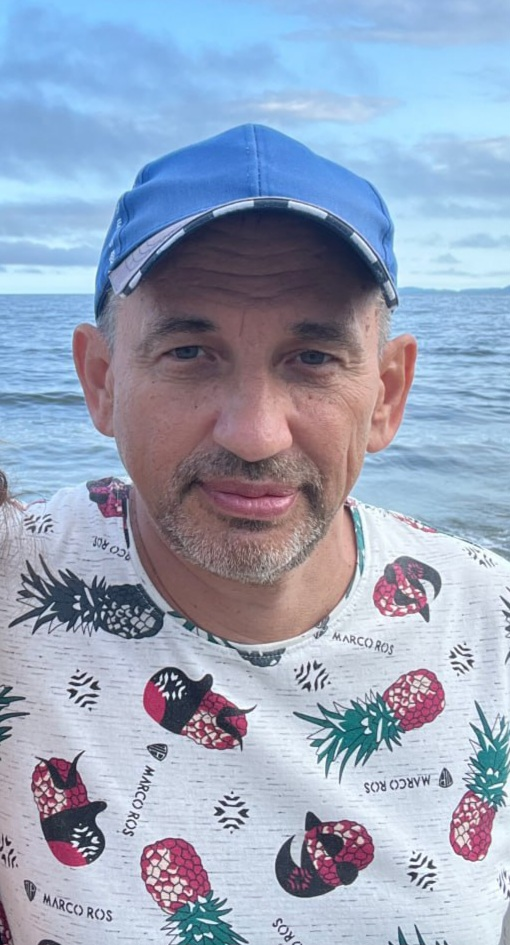
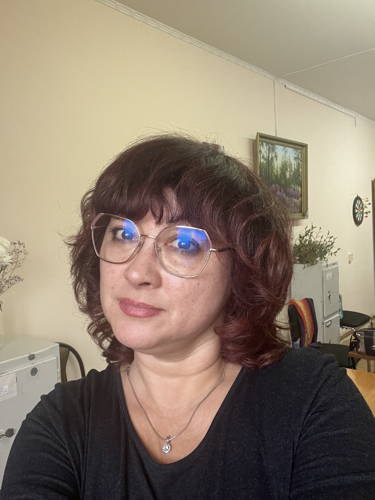
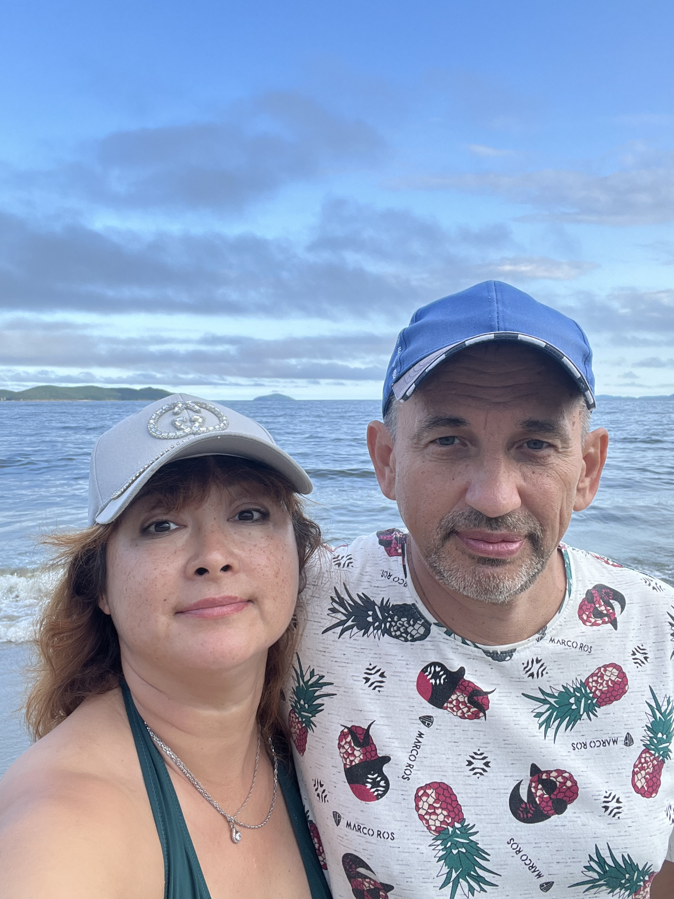
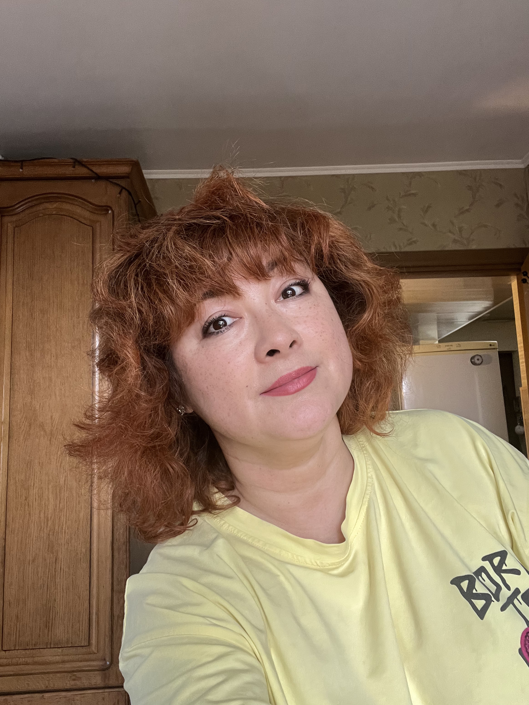
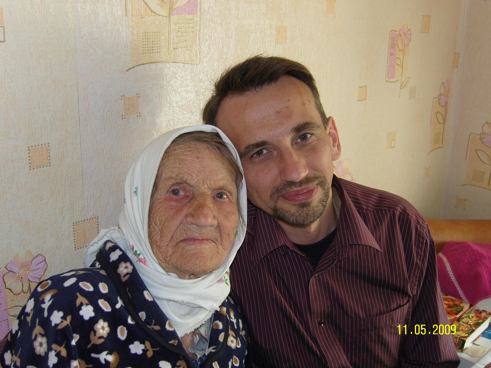
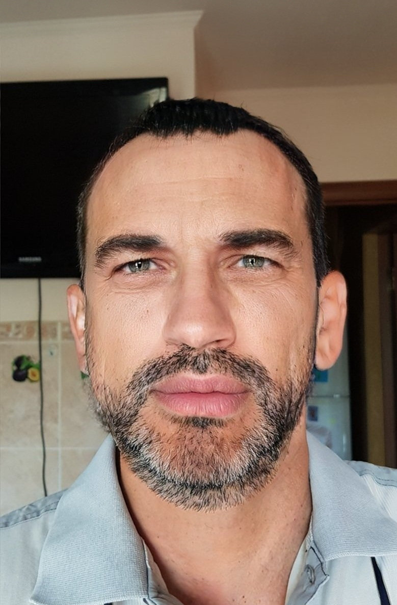
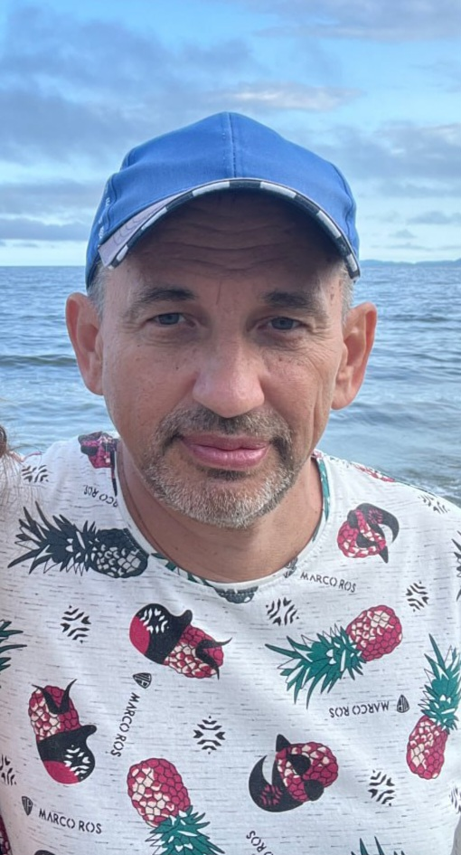
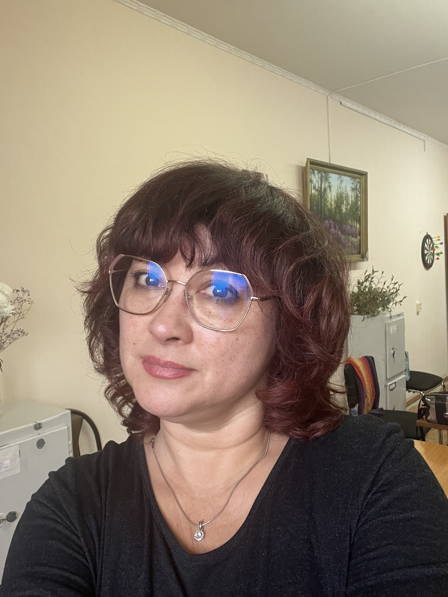
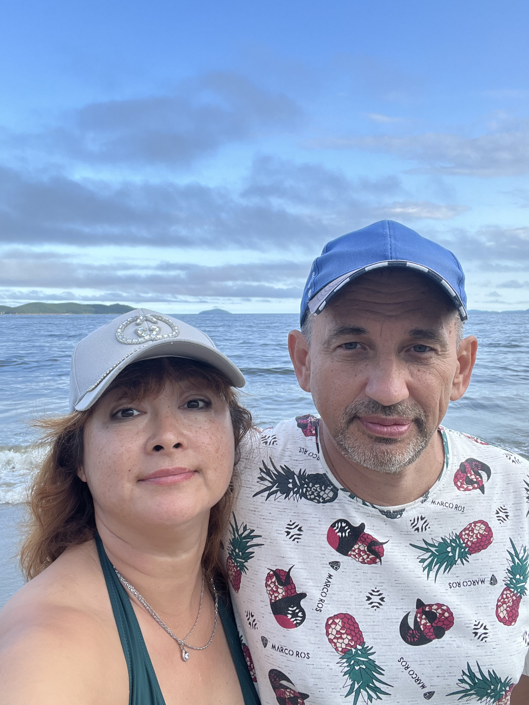
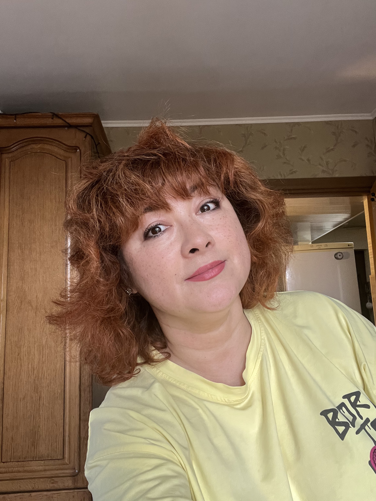
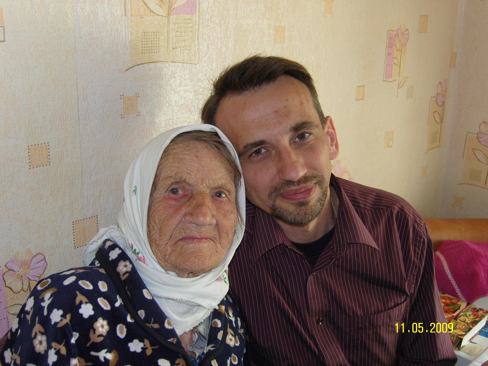
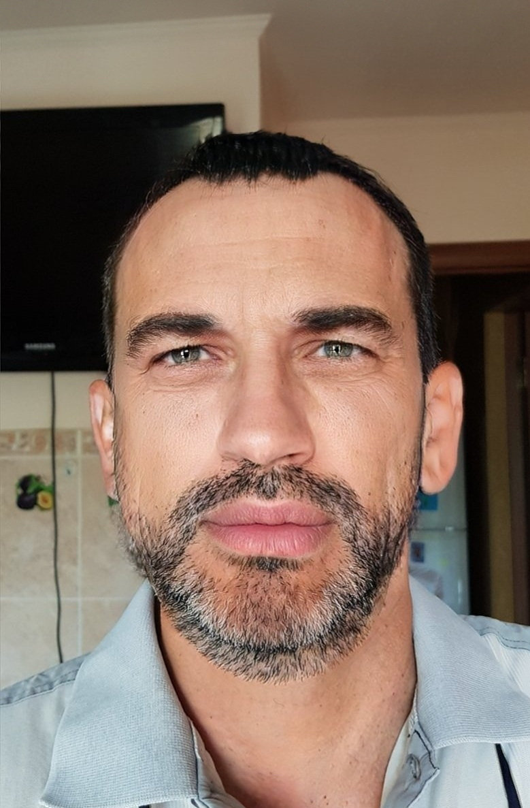
Этот сайт я создал, чтобы сказать это:
Родные — это те, кто поддерживают в трудные моменты и радуются вашим достижениям.
Те, кто учат жизни, любви и доброте. Те, кто вдохновляют быть лучше каждый день.
Их тепло, забота и пример — самое ценное, что у меня есть.
Спасибо вам!
Чему я научился на курсе "Создание сайтов" в Алгоритмике
Благодаря тому, что вы отправили меня на курс "Создание сайтов" в "Алгоритмике", я научился многому! Теперь я понимаю, как создавать сайты, и вот чему я научился:
- Как делать сайты: я научился создавать страницы в интернете и оформлять их так, чтобы они были красивыми и удобными.
- Как добавить интерактивность: я понял, как делать сайты не только красивыми, но и умными, чтобы на них можно было нажимать кнопки или заполнять формы.
- Как работать с инструментами: я узнал, как использовать специальные программы и библиотеки, которые помогают быстро и легко создавать сайты.
Эти знания помогут мне не только создавать сайты, но и уверенно двигаться вперёд в изучении новых технологий. Спасибо вам за то, что поддержали меня в этом!
Я очень благодарен вам, что вы отправили меня на этот курс. Благодаря вам я получил важные навыки, которые пригодятся мне в будущем, и мне стало намного интереснее изучать технологии. Вы помогли мне открыть для себя новое увлекательное направление, и я обещаю, что буду использую полученные знания!
Этот сайт — мой тёплый привет вам от всего сердца!